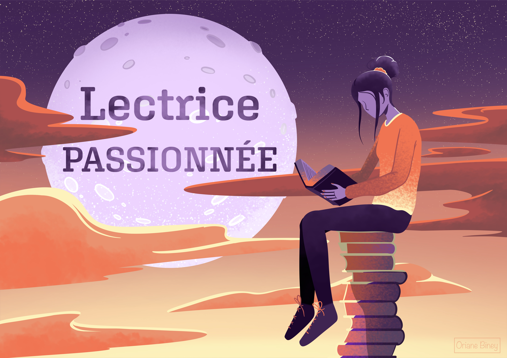
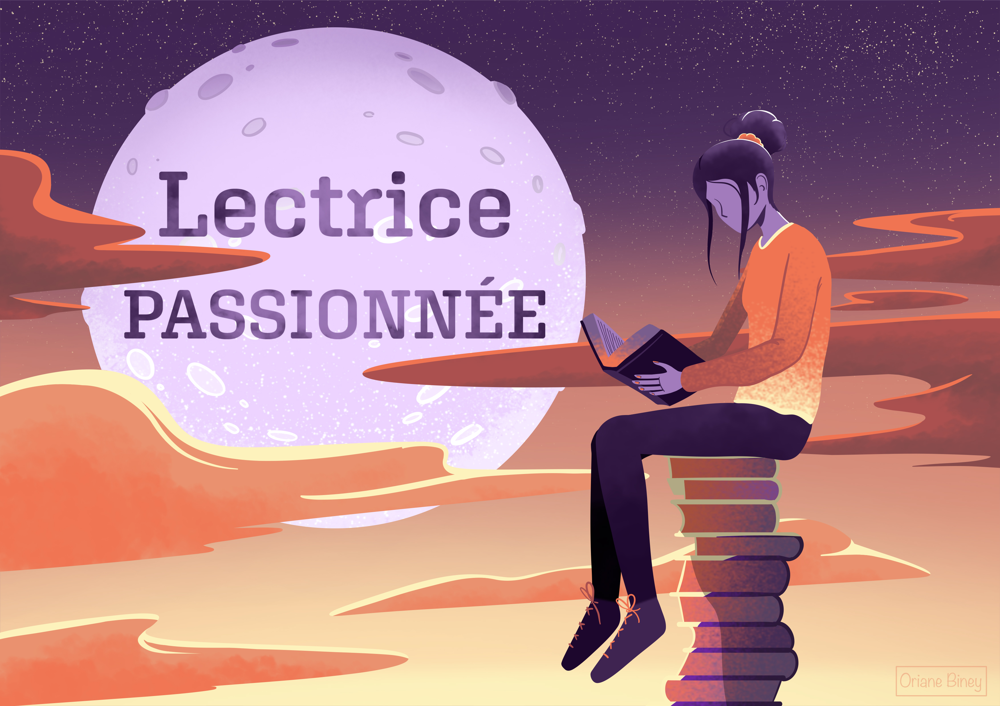

À PROPOS DE MOI
Mon parcours a commencé avec un BUT Métiers du Multimédia et de l’Internet, spécialité Développement Web et Dispositifs Interactifs. C’est là que j’ai découvert la richesse du développement, en apprenant à concevoir des sites et des applications en partant de zéro, tout en intégrant des notions de design et d’expérience utilisateur.
Aujourd’hui, je poursuis mes études en cycle ingénieur à l’ENSIM, en spécialité informatique, et je suis en alternance chez STDI. Cette expérience me permet de mettre en pratique ce que j’apprends, d’évoluer dans un cadre professionnel et de progresser chaque jour en tant que développeuse fullstack dans un domaine que j'aime : l'édition. Il s'agit de l'un des domaines qui m'intéresse le plus avec l'éducation et la santé.
- J’aime travailler sur toute la chaîne d’un projet :
- Frontend : création d’interfaces web modernes, interactives et accessibles, avec une attention particulière à l’ergonomie et au confort d’utilisation.
- Backend : mise en place de bases de données, développement d’API, gestion de la logique métier et réflexion sur les architectures logicielles.
- Outils et méthodes : gestion de projets agiles, intégration continue, tests, documentation, sécurité et performance.
En dehors du code, je cultive depuis l’enfance une passion pour le dessin, aussi bien traditionnel que numérique. J’aime participer à des événements créatifs comme l’Art Fight ou les 23h de la BD, qui me poussent à expérimenter et à progresser.
 

MES COMPÉTENCES
HTML/CSS
JavaScript
React
Node.js
Java
PHP
Symfony
Docker
MySQL
NoSQL
Git
Figma
MES PROJETS

Projet TDM
Lors de mon stage chez Desk, j'ai mis en place des scripts XSLT pour transformer la mise en page InDesign en fichiers XML conformes aux demandes du client afin de générer différents supports.
Plateforme de gestion
Lors de mon stage chez Hatier, j’ai travaillé sur un projet visant à résoudre un problème de compatibilité et de mutualisation des fichiers dans leur processus de gestion de données.
May Human Lab
Dans le cadre d’un projet d’école en groupe, nous avons collaboré avec le Fab Lab May Human Lab, un fab lab centré sur le handicap, pour la refont et l'amélioration de leur site.
DopInfos
Dans ce projet de groupe, nous avons créé une campagne de sensibilisation sur les drogues, incluant un site internet, un spot vidéo, des podcasts et des photographies.
Burn the House
Dans le cadre d’un projet de découverte de Dart et Flutter, nous avons choisi de les apprendre en développant un jeu vidéo d’horreur en 2D.
Escape Game
Dans le cadre d’une introduction à la réalité virtuelle, nous avons développé un escape game en utilisant un casque VR.
MON ALTERNANCE
Présentation de l'entreprise
Dans le cadre de mon cycle d’ingénieur en informatique à l’ENSIM, j’ai choisi d’effectuer une alternance de trois ans au sein de STDI, une entreprise de prépresse située à Lassay-les-Châteaux (53110).
STDI est spécialisée dans la mise en page de livres scolaires et scientifiques, et dispose de plusieurs pôles de compétences :
• Le service d’informatique éditoriale, qui automatise certaines étapes de la mise en page et met en place des flux de production autour du XML.
• Le service digital, qui développe des sites web, des applications mobiles ainsi que des ressources numériques sur mesure.
Je travaille sur ces deux services, ce qui me permet d’élargir mes compétences en abordant à la fois le développement logiciel et les problématiques liées au traitement des données éditoriales.
Missions du service prépress
- Adaptation/création de scripts sur Adobe InDesign pour aider les opérateurs PAO et les graphistes.
- Mise en place de flux de production XML (Java, XSLT).
- Veille et mise en place de l’IA au sein de l’entreprise.
- Refonte d’une plateforme éditorial (Java, PHP, Javascript, XSLT).
Technologies utilisées :
- Java
- Javascript
- XML / XSLT
- PHP
Missions du service digital
- Développement Web fullstack (PHP Symfony, React JS, Next, NodeJS).
- Développement d’API.
- Intégration Web (HTML/JS/CSS, Wordpress).
- Développement mobile (React Native).
Technologies utilisées :
- Wordpress
- HTML/CSS
- Javascript
- React, React JS
- Node JS
- PHP Symfony
QUIZ : Me connaissez-vous ?
Testez vos connaissances sur mon parcours et mes préférences avec ce petit quiz de 10 questions !